系統性回顧跟一般綜述的差別在「篩選過程可以被別人重做」。這篇從 904 篇篩到 86 篇，每一步都有數字。讀它的價值不是背結論，是拿到一張這個領域的地圖，以及一套可以追溯的證據。
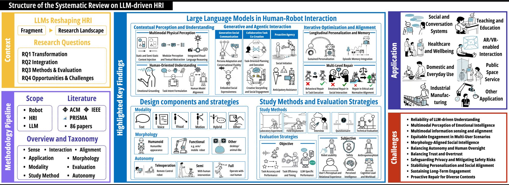
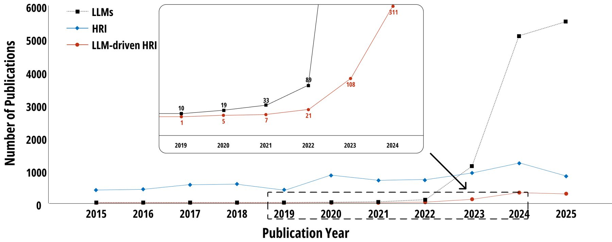
作者是港科大（廣州）加浙大、四川大學華西醫院的團隊，2026 年 2 月放上 arXiv。他們問四件事：
機器人：必須有實體，或在 VR、AR 裡有模擬的實體存在。純文字聊天機器人不算。這條線劃得很硬，因為整篇論文的主題就是「身體」帶來的差異。
人機互動（HRI）：採 Sheridan 的四分類，也就是監督控制、遙操作、自動車輛、社交互動。研究方法靠使用者研究，不是只跑基準測試。
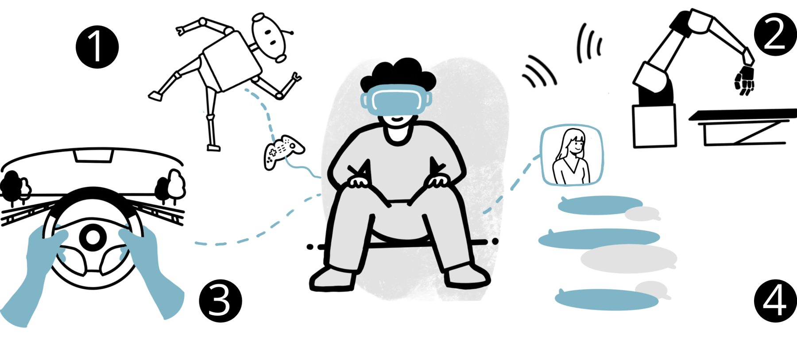
LLM：故意定得寬，涵蓋純文字模型、視覺語言模型（VLM）、多模態模型（MLLM）。理由是這個領域變太快，定太窄一年就過時。
這回答了上一頁你問的那個問題：怎麼確認資料是對的？這篇的做法是 PRISMA 流程，一套系統性回顧的標準規範，每個篩選步驟都要公開數字。
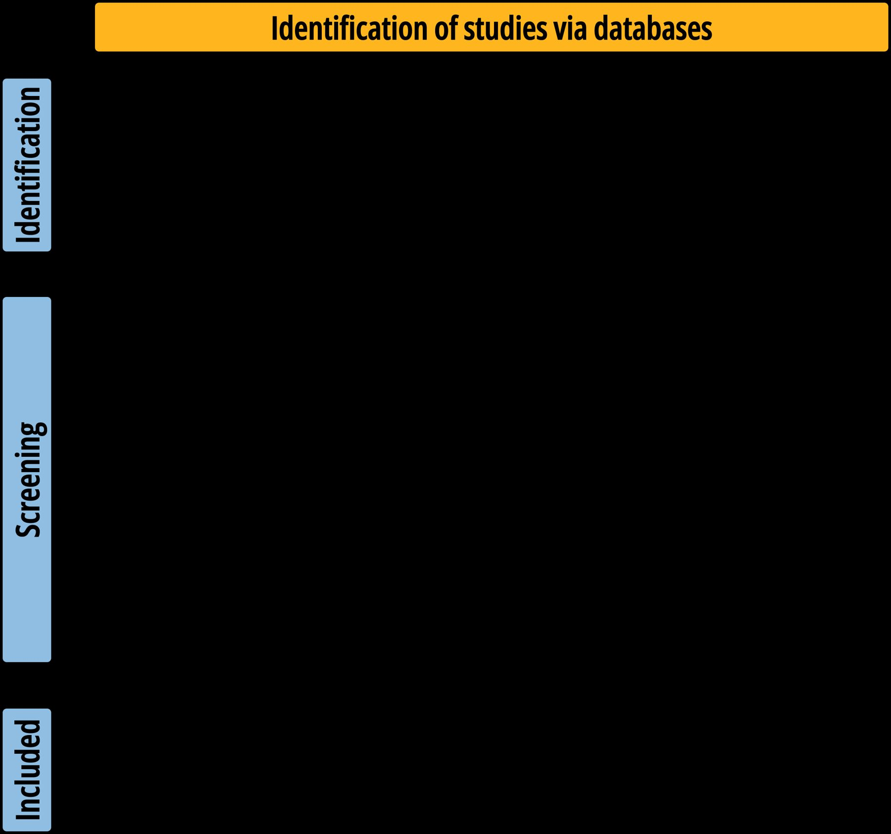
納入條件很嚴：要同儕審查的完整論文、要有實體機器人、要有真人參與的互動或評估、LLM 要是系統核心元件而不是在未來工作段落提一下。排除了工作坊短文與技術報告。
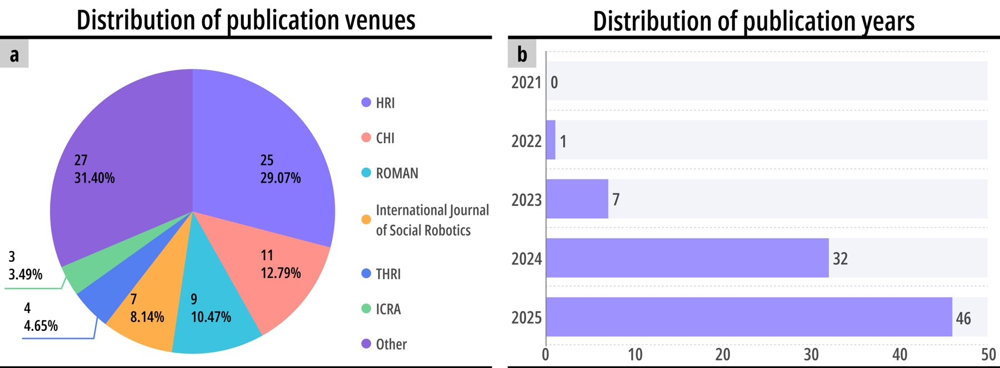
編碼由兩位審查者獨立進行，算 Cohen's kappa 一致性係數。表面特徵（形態 0.894、應用領域 0.904）一致性高，需要詮釋的類別（感知理解 0.720、對齊 0.684）一致性低，他們開校準會議重新定義後再編碼一次。另外從 306 篇被排除的論文隨機抽 100 篇重審，只找到 3 篇邊緣案例，最後仍判定排除。
| 層 | 內容 | 等級 |
|---|---|---|
| 底層證據 | 86 篇同儕審查論文，主要來自 HRI（31%）、CHI（13%）、RO-MAN（10%）等頂會，可在 llms-hri.github.io 逐篇查 | 已驗證 |
| 三階段框架與十一個挑戰 | 作者自己的綜合與命名，方法嚴謹但框架本身還沒被其他研究者採用或檢驗 | 社群層 |
| 這篇論文本身 | arXiv 預印本，尚未通過期刊或會議審查 | 社群層 |
| 本頁對你專案的對照 | 我從論文推到你的 LanderPi 與 AI Little Monster，屬推論 | 未驗證 |
傳統機器人學的迴圈是「感知、規劃、行動」。作者把它改成「感知、互動、對齊」：規劃變成跟人一起做的互動，行動之後多了一個持續修正的階段。感知階段的核心問題是：LLM 只懂文字，世界不是文字，中間怎麼接？
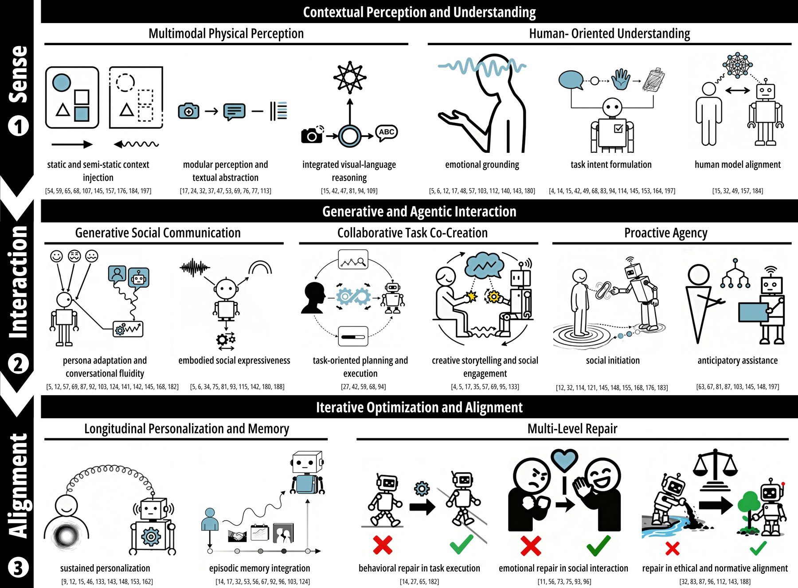
「感知、規劃、行動」假設機器人自己規劃、自己執行。LLM 進來之後，兩件事變了。第一，規劃不再是機器人獨自做的，人可以用自然語言隨時插進來改，所以「行動」變成「互動」。第二，生成式模型會漂移、會幻覺、會忘記你是誰，所以行動之後必須有一個 對齊 階段，靠記憶、個人化、修復機制把它拉回來。
LLM 吃的是文字（或多模態模型吃圖），機器人看到的是感測器數據。86 篇論文裡有三種接法，語意整合程度由低到高：
| 方式 | 做法 | 代價 |
|---|---|---|
| 靜態脈絡注入 | 把環境資訊直接寫進系統提示：房間裡有什麼、物品尺寸、空間關係。或用預先建好的語意地圖 | 環境一變就失效。適合實驗室，不適合動態場景 |
| 模組化感知轉文字 | 感測器到文字的管線：YOLO、SAM 抽物件標籤，語音辨識轉文字，溫度位置轉成敘述句。LLM 拿到的是文字描述，不碰原始影像 | 轉文字時會掉資訊。但便宜、可控、可除錯 |
| 整合式視覺語言推理 | 直接用 VLM 看畫面，即時生成場景描述，或接動態知識圖譜做可供性規劃。混合做法會加 ArUco 這類基準標記補精度 | 模型重、延遲高。而且「把多模態壓進同一個語意空間」本身就是未解問題 |
對照你的 AMR 經驗：這三種方式其實就是介面契約的三種粒度。第一種是把契約寫死在提示裡，第二種是中間加一層翻譯員，第三種是讓模型自己讀原始訊號。
情緒落地：把臉部偵測、語音的時間特徵、對話文字融合起來推情緒。進階的研究在做「同理落地」，讓機器人抓到懷舊、隱含的後悔這類跨多輪對話才看得出來的狀態。長期健康監測需要這個。
任務意圖解析：把「幫我把那個東西拿過來」這種模糊句拆成任務類型、時間、設備的硬規格。輸入不限文字，草圖、肢體語言也能推目標。進一步可以預測任務進度，例如偵測使用者已經完成哪個步驟。
人類模型對齊：最高層。LLM 當作「零樣本人類模型」，模擬「這個人現在會怎麼想」，也就是往心智理論走。對話層面是偵測換話題的意圖，架構層面是把社交規則寫成禁止與義務。
LLM 讓機器人從「指令與回應」變成「生成式、能主動、能共創」。三種能力：生成社交溝通、協作共創、主動代理。每一種都有一個對應的陷阱，而且陷阱通常出在人的期待，不在技術。
人格調適與對話流暢：不再用寫死的對話樹。研究者把心理學框架（例如五大人格特質）餵給模型，讓機器人依場合切換人格：帶點反諷的開朗語氣能提升親切感，自我揭露的風格適合健康調解，情緒引導適合長者照護。維持人格的技術重點是輪替時機預測，也就是分析對話歷史跟句法線索，抓準什麼時候該接話。
具身社交表達：光會講話不夠，要同步講話、情緒狀態、身體動作（例如點頭）。常見架構是 LLM 做規劃、規則系統做執行：讓模型決定「現在要表達什麼」，讓規則決定「身體怎麼動」，這樣延遲才壓得下來。上一頁講的「LLM 不直接控制機器人」在社交層面也成立。
任務導向：走向共享自主，也就是控制權在人跟機器之間分配。GenComUI 把 LLM 生成的計畫視覺化，讓人先看再執行。LILAC 讓人在執行中用自然語言修正，即時更新機器人的控制空間，從很少的示範學會複雜操作。AR 與時間軸工具把抽象意圖跟精確控制接起來。
創意與社交：機器人當創意鷹架。Jibo 跟小孩共同編故事，主動提出分岔的情節。治療情境下依長者的認知需求動態生成個人化敘事。
社交發起：使用者偏好會主動說明自己能做什麼的機器人。SONAR 這類系統在暖場階段主動閒聊，或用「情境控制」策略先管理期待。但這裡有個反直覺的發現：給使用者太細的控制權，反而讓機器人看起來不像有智慧的社交夥伴。低粒度的調整符合偏好，高粒度的調整會把它降級成工具。
預期式協助：從多模態感知預測需求、主動開啟情境對話、依人格主動引導正面情緒、用好奇心策略主動問問題補知識缺口。要維持對齊，機器人要主動告知做完了什麼，遇到模糊要主動問，出錯時給結構化的原因說明。
感知跟互動只保證「現在能動」，不保證「長期還對」。生成式互動會幻覺、會偏移。對齊階段靠兩組機制：個人化與記憶把關係拉長，三層修復把錯誤拉回來。這一節跟上一頁的安全層是同一個問題的兩面。
持續個人化：短期調適處理安全跟對話節奏，長期個人化要改決策模型本身。傳統強化學習太吃資料，所以研究者用 LLM 加速：ChatAdp 用 ChatGPT 生成合成回饋，幾乎不用人力就做出個人化訓練資料。LAMS 讓使用者用自然語言直接教機器人新的邏輯。VITA 為每個人養一個專屬的使用者模型，隨時間對齊人格特質。
情節記憶整合：跨對話累積的共同歷史。技術上用 DSR 圖這類記憶架構記偏好話題跟認知模式，之後依歷史調教練策略或語速。有系統用兩個 LLM 組成「感知、檢索、行動」的持續迴圈。一個細節值得記：記憶怎麼被編碼跟取出，取決於機器人自己的人格。同一件事，開朗的機器人跟嚴肅的機器人記住的重點不一樣。
| 層 | 修什麼 | 怎麼修 |
|---|---|---|
| 行為層 | 實體任務失敗 | 控制層面：LILAC 讓人用語言修正控制空間。預防層面：UJI-Butler 在執行前先讓人審核計畫。邏輯層面：RobotGPT 用模擬器裡的修正機器人反覆分析並修正 LLM 生成的程式碼，直到跑成功 |
| 情緒層 | 社交互動崩壞 | 用視覺線索或手勢化解誤會。長期研究發現修復策略會隨關係演變：一開始是通用道歉，後來變成能承認對方感受的同理結構 |
| 倫理層 | 違反社會規範 | SONAR 用禁止與義務的形式規則強制社交適當性，並用線上學習調整「社交距離」這類模糊定義。對弱勢族群要透明說明限制，敏感話題設護欄 |
ROSClaw 的沙箱預演對應這裡的「預防層面」（UJI-Butler 的人工審核），證據回執對應「出錯時給結構化原因」。差別是上一頁只管物理安全，這一頁多了情緒層跟倫理層，因為對象是人，不只是桌面。
框架講能力，這一節講你動手做時真正要決定的三件事：用什麼通道互動、機器人長什麼樣、它有多自主。三個決定互相牽制，形態限制通道，自主程度決定風險。
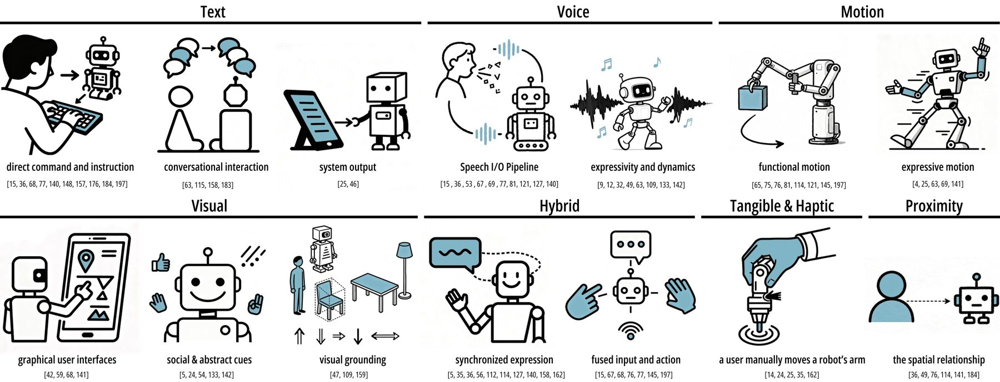
文字：最直接，指令、對話、螢幕輸出都用它。語音：主流管線是語音辨識轉文字、LLM 處理、再文字轉語音。新趨勢是抓語調跟語速這類副語言特徵，以及讓語音跟身體動作同步。視覺：螢幕、AR 預覽、表情、LED 呼吸燈，還有 VLM 讀場景。
動作：這裡有一句話跟上一頁完全對上：LLM 管高階任務規劃，把抽象指令翻成動作序列，低階控制仍靠傳統機器人技術。動作分功能性（抓取、導航、組裝）跟表達性（手勢、狀態顯示，例如空氣清淨機用動作表示運轉強度）。
混合：把語音跟指示手勢並行處理來消歧義，語音加草圖加感測器做空間任務。觸覺：手動拉機器手臂示範、觸控輸入，進階的在模擬「摸到活物」的感覺。距離：機器人調整跟人的距離來管理對話動態，多數系統本來就設計成同一空間面對面。
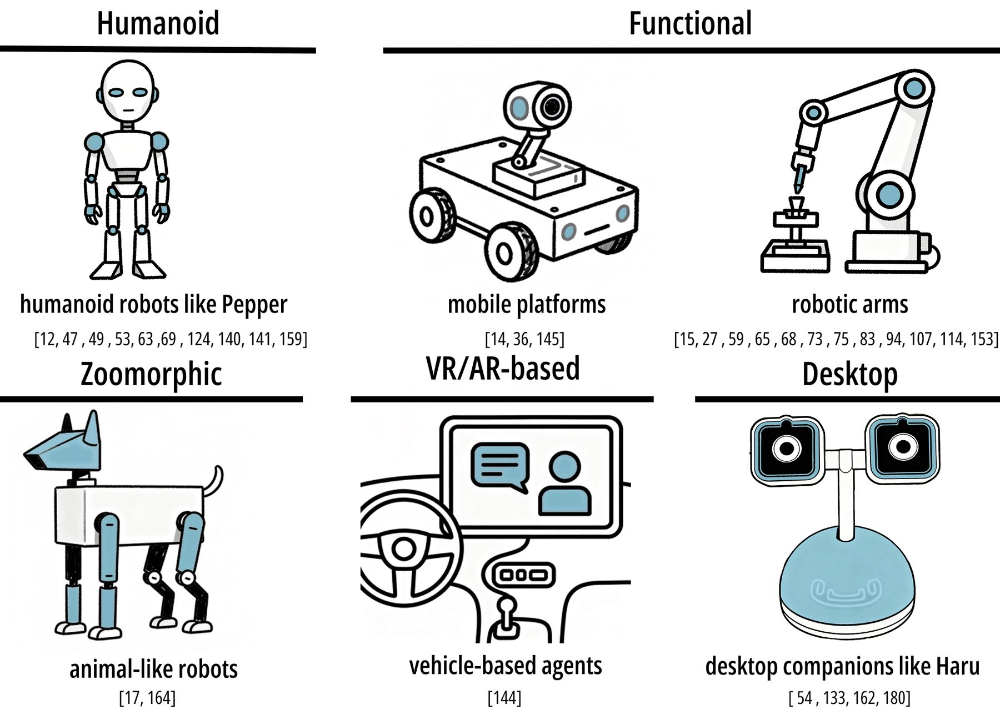
人形最多：Pepper、Nao、Furhat，因為適合社交場景。功能型主導任務場景：TurtleBot、Segway 這類移動平台，還有各種機械手臂。其他：動物型、桌面陪伴型（Haru）、車載代理。形態不只是外觀，它直接限制機器人能表達什麼，這在第 8 節的挑戰 5 會回來。
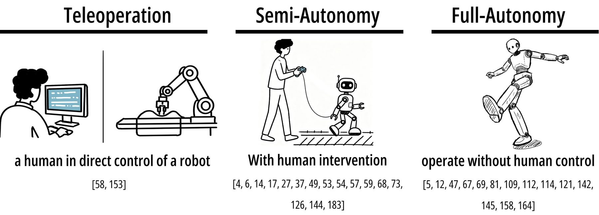
遙操作：人直接控制。LLM 在這裡的角色是把操作者的高階指令翻成低階動作以降低認知負荷。即使如此仍常有人工審核，例如實驗者先核准 LLM 生成的回應機器人才講。遙操作也是模仿學習的資料來源。
半自主：明確被當作 失敗緩解策略 用，防對話崩壞、防不當回應、防物理風險。實作方式包括「綠野仙蹤」式的幕後人工、直接介入推進任務、線上修正、人工篩選 AI 生成內容。
全自主：目標是研究「湧現的互動」，也就是機器人自己生成對話跟行為之後，人會怎麼反應。實作幾乎都是混合架構：中央 LLM 加專用元件（身體追蹤的視覺模型、輪替預測模型、標準語音管線），有些加知識圖譜或強化學習。
| 決定 | 問自己 |
|---|---|
| 通道 | 哪一個通道的失敗最不能接受？先把那個做穩，其他當加分 |
| 形態 | 它講話有多流利，身體就得跟得上多少？跟不上的落差怎麼老實呈現 |
| 自主 | 它出錯時誰擋得住？擋不住的部分就不該全自主 |
HRI 跟純技術研究最大的差別是評估對象包含人。這一節濃縮成兩件事：研究者用哪些方法收資料，以及客觀跟主觀兩類指標各有什麼。你不做學術研究，但做專案時「怎麼判斷它好不好」需要這套語言。
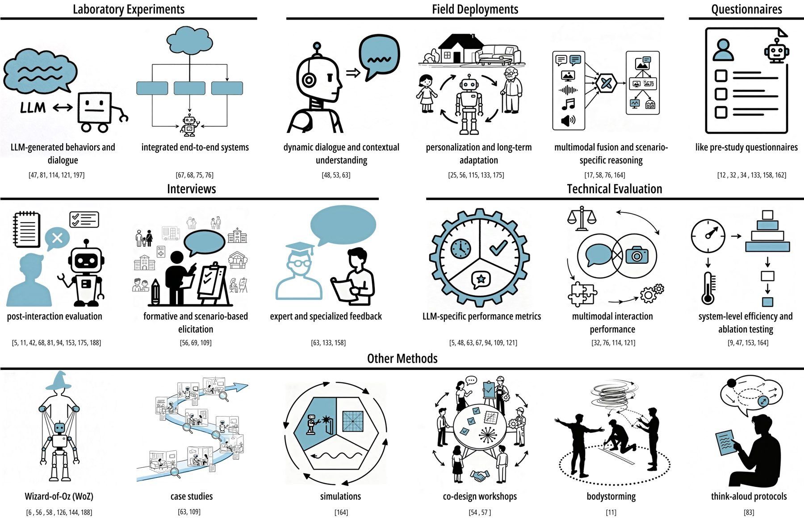
實驗室實驗是基石，控制變因看 LLM 人格、好奇心、多模態推理怎麼影響體驗。田野部署看真實環境跟長期使用：教室、公共節慶、家庭、長照中心。訪談抓細膩的感受與理由，也用在設計初期跟專家回饋。問卷前測收背景，後測量享受度、感知智慧、可用性。技術評估量延遲、程式碼執行成功率、生成語言品質，以及消融測試隔離 LLM 的貢獻。
值得單獨記的是 綠野仙蹤法：幕後由人假扮系統，用來模擬還做不到的能力，或在模型不穩時保護使用者研究。它是原型階段的標準工具，不是作弊。
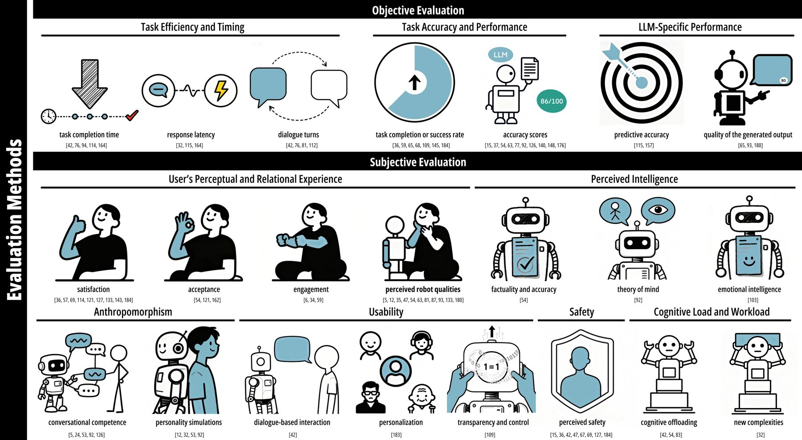
| 類 | 指標 | LLM 帶來的新東西 |
|---|---|---|
| 客觀 | 效率與時間：任務完成時間、回應延遲、對話輪數 | API 延遲成為輪替是否自然的關鍵。有研究 LLM 讓多模態任務時間減半 |
| 準確與表現：任務成功率、細粒度準確分數 | 語意理解精度、使用者狀態估計準確率 | |
| LLM 專屬：召回率、精確率、F1 | 程式碼生成用 Pylint 分數，行為跟專家設計的相似度 | |
| 主觀 | 感知與關係體驗：滿意度、接受度、投入度 | 社交對話品質、情緒安全、對 AI 生成內容的態度、對透明與欺騙的顧慮 |
| 感知智慧（Godspeed 問卷） | 幻覺會直接打擊感知智慧；心智理論跟情緒智慧成為新維度 | |
| 擬人化 | 對話能力、人格一致性、能否表達價值觀。過度擬人會進恐怖谷 | |
| 可用性（SUS 量表） | 加上聊天機器人可用性量表、個人化偏好遵從、透明與可調性 | |
| 安全 | 多了 內容安全：生成不當內容的風險，以及邏輯失敗轉成物理風險 | |
| 認知負荷（NASA-TLX） | 雙面性：降低溝通成本，但多代理協調跟錯誤恢復可能增加負荷。使用者對 LLM 的既有期待也會影響感受 |
不需要全套。挑兩個客觀（例如任務成功率、回應延遲）加兩個主觀（例如 SUS 十題、一句話問「你覺得它懂你嗎」），每次改版量一次，就已經比多數個人專案嚴謹。重點是改版前後用同一把尺。
八個應用領域，每個領域再依 LLM 貢獻的能力細分。這張圖的用法是定位：你的專案落在哪一格，那一格已經有誰做過什麼。
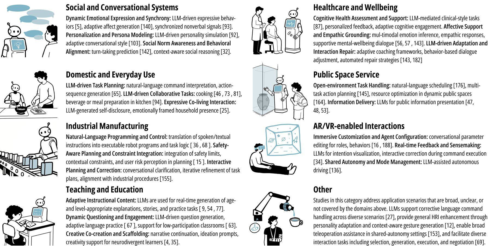
| 領域 | LLM 在做什麼 |
|---|---|
| 社交與對話系統 | 動態情緒表達與同步、人格模擬、社交規範感知與輪替預測 |
| 健康與福祉 | 認知健康評估、情感支持與同理落地、互動修復 |
| 家庭與日常 | 任務規劃、協作（煮飯、備餐）、表達性共居互動（自我揭露、有情緒的存在感） |
| 公共空間服務 | 開放環境任務處理、公共資訊傳遞 |
| 工業製造 | 自然語言編程與控制、安全感知規劃、互動式計畫修正 |
| AR 與 VR | 沉浸式客製化、即時回饋與意義建構、共享自主與模式管理 |
| 教學與教育 | 依程度生成內容、動態提問、創意共創與鷹架 |
| 其他 | 修正性語言指令、通用互動強化、遙操作輔助 |
你的兩個專案的位置：AI Little Monster 跨「社交與對話」跟「家庭與日常」的表達性共居那一格。LanderPi 落在「家庭與日常」的任務規劃與協作，以及「其他」的修正性語言指令。兩格都已經有同儕審查研究可以追。
作者把挑戰照三階段分組：感知四個、互動四個、對齊三個。每一條都是踩坑前的預警。標了「跟你有關」的是我判斷對你專案最直接的。
表層是延遲、不一致、不可預測，這些直接破壞即時感知。深層是高階推理的脆弱：理解幽默會失敗，具身情境下的空間與數量推理會失敗。現有補救（落地提示、多角色驗證、人在迴圈修正）又各自帶來新的複雜度跟不透明。
機器人已經能流暢回應、能加語調跟「喔」「哇」這類感嘆詞，但猶豫、壓力、群體情緒這些訊號本質上就是嘈雜跟模糊的。另一個落差：能生成有同理心的回應，不等於有運作中的心智理論。多數框架在長期情境下會露餡，變成「理解的假象」。輪替也卡在這裡：機器人還做不到用眼神、語助詞、微停頓來協商對話流。
跟你有關：陪伴型角色最容易在這裡被看穿。
難的不是收訊號，是訊號衝突時怎麼裁決：使用者嘴上講笑話，臉卻是生氣的。現在的架構缺這種仲裁邏輯，錯誤會串連。而且對齊時間戳不夠，系統要能把「我怎麼解讀這些融合訊號」講給使用者聽。MARCER 顯示透明回饋能緩解，但細微社交線索的落差沒解決反而讓人更挫折。要的是依情境動態決定信哪個通道的跨模態推理，不是把所有東西塞進一個文字提示。
咖啡廳、教室、家庭都有多個人。機器人要平衡偏好，還要看懂人跟人之間的動態，避免排擠。多人時連「這句話是對我說還是對別人說」都難判斷。人跟人之間的隱性偏見會帶進來，機器人沒有足夠社交感知就會放大不平等。
LLM 讓機器人講話很流利，人就會期待它的頭跟手也能對應表達。但講得越流利、身體越粗糙，期待落差越大；幻覺會造成信任斷裂；太擬人會進恐怖谷。作者的建議是刻意平衡，例如 優先考慮物理上的順從而不是擬人的逼真，或加明確的物理線索，避免過度人化。
跟你有關：娃娃身體跟 LLM 嘴巴的落差就是這一條。
三個反作用力：太細粒度的終端使用者編程會讓機器人被當工具，降低智慧感跟社交存在感；LLM 自動化提升效率，但可能把注意力拉到個人結果上，壓縮跟其他人溝通的機會；主動的社交行為（閒聊、情緒回應）會給使用者製造不想要的互動義務。出路是混合自主，圍繞共享控制或人在迴圈設計。
跟你有關：LanderPi 的自主程度該切在哪。
個人化、社交規範感知、擬人度都會降低信任門檻，但擬人線索觸發的社交解讀常超過系統真實的可靠度。技術不透明妨礙信任校準：幻覺跟不一致的推理在「表面自信」的包裝下製造未校準的過度信任。而且信任修復是不對稱的：道歉跟解釋有用，但失去的信心怎麼重建仍是開放問題。
跟你有關：依代越像朋友，這條越危險。
機器人是私人空間裡的具身觀察者，會做「語意監控」：不只錄資料，是持續推理你的習慣跟社交動態。LLM 當決策引擎會帶來不可預測的物理風險，幻覺或不透明可能導致危險動作。刪除提示、分齡指引這類反應式措施擋不住「一個把推理物理化的代理」本身的不可預測性。安全規範還跨文化不同。
個人化能維持享受，但也會在弱勢使用者身上製造情感依賴：一項三年的失智症研究顯示，機器人突然撤走會造成顯著傷害。同理校準短期強、長期會失去新鮮感並侵蝕信任。修復策略太精緻或不相關反而打斷對話流。還有一個更深的問題：有些人偏好機器人陪伴，正是因為它繞過了人際關係的不可預測與情緒複雜度。如果這個偏好普及，個人化對齊跟長期福祉怎麼平衡，沒人有答案。
跟你有關：這是依代這個概念的核心倫理問題。
新鮮感褪去之後怎麼辦。現有系統常無法把短期記憶轉成穩定成長的人格，行為模型追不上人的期待變化，蜜月期過後互動就「走味」。方法論上的缺口是縱向驗證：多數證據是快照，短期部署看不到角色跟信任動態怎麼隨時間演變，也看不到適應疲勞。從工具變成持久夥伴還有情感依賴跟價值漂移的倫理問題。
跟你有關：一個月後它還值得每天講話嗎。
修復不能停在反應式的樣板。它要變成主動、能預測錯誤、能分辨真正的打斷跟雜訊、能提出有根據的替代方案、能透明說明自己的限制。這把修復從「糾錯動作」變成「持續的社交情緒協商」。但怎麼依領域校準（從閒聊到高風險任務）研究還很少。
這篇對 AI Little Monster 的相關度高過 LanderPi。它的核心（社交理解、記憶、個人化、關係修復、依賴風險、信任校準）正是「依代」要面對的。LanderPi 用得到的是任務意圖、功能型形態、半自主、行為層修復。以下全是我的對照，屬未驗證。
| 論文的概念 | 對依代的意義 |
|---|---|
| 情緒落地、人類模型對齊（第 2 節） | 手機感官層不只辨識情緒，要跨多輪對話抓「隱含的狀態」。但挑戰 2 提醒：這裡最容易做出理解的假象 |
| 人格調適、記憶依人格編碼（第 3、4 節） | 依代的人格不是裝飾，它決定記住什麼、忘掉什麼。人格先定，記憶架構才能定 |
| 主動代理的互動義務（挑戰 6） | 主動開口是雙面刃。它主動講話，就是在給你義務回應。頻率跟時機要設計，不是越主動越好 |
| 形態落差（挑戰 5） | 娃娃身體表達力有限，LLM 嘴巴表達力無限。與其讓它假裝有表情，不如老實用簡單的物理線索（燈、姿勢、一個動作）表示狀態 |
| 情感依賴、新鮮感褪去（挑戰 9、10） | 依代的定義是「讓已存在的關係來住」，不是製造新依賴。這條界線要寫進設計原則，而且要有「它不在的時候怎麼辦」的答案 |
| 自主程度（第 5 節） | 半自主。你自己就在迴圈裡，這反而是優勢：不需要全自主就能運作 |
| 論文的概念 | 對 LanderPi 的意義 |
|---|---|
| 任務意圖解析（第 2 節） | 「把那個拿過來」拆成任務類型、目標、限制的硬規格，這一步就是上一頁的模式 B 的輸入端 |
| 動作通道：LLM 高階、傳統低階（第 5 節） | 跟姐妹頁的架構完全一致：Mac Mini 跑 LLM 出計畫，Pi 5 的 ROS 2 跑執行 |
| 行為層修復（第 4 節） | 三個位置都能用：執行前人工審核計畫、模擬器裡先跑一次、執行中用語言修正 |
| 半自主當失敗緩解（第 5 節） | 第一版就該是半自主，每個動作先給你看再執行。這不是退而求其次，是主流做法 |
| 評估（第 6 節） | 任務成功率、回應延遲、加一個「你覺得它聽懂了嗎」的主觀題。改版前後同一把尺 |
| LLM × ROS 2 | LLM × HRI（這頁） | |
|---|---|---|
| 問題 | 怎麼把語言接上動作 | 接上之後人跟它之間要設計什麼 |
| 核心概念 | 三種架構模式、安全層、延遲 | 三階段框架、三個設計決定、十一個挑戰 |
| 安全 | 物理安全：沙箱、許可、回執 | 加上情緒層跟倫理層的修復 |
| 證據類型 | 兩篇同儕審查加兩個活躍開源專案 | 86 篇同儕審查的系統性回顧 |
| 對哪個專案更直接 | LanderPi | AI Little Monster |